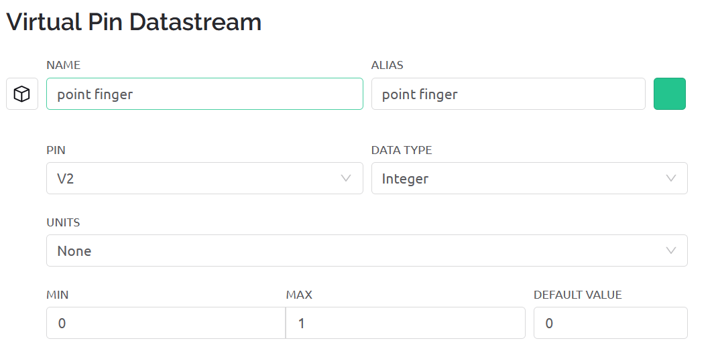
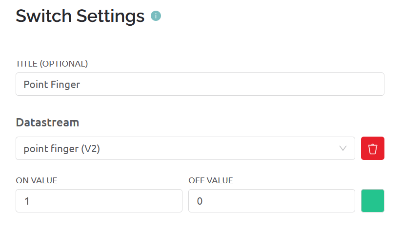

In the example only one pin is required: This pin is configured to act as a boolean (Value 0-1) and will control whether the hand performs the gesture (pointing index finger) or returns back to resting position (open hand). The virtual pin is configured as follows:

In order to control the arm we included a single switch button that changes the value of the previously configured pin, so when the switch is activated the hand will perform the pointing gesture, and when it gets deactivated the hand will return to resting position.
The switch widget configuration is:
